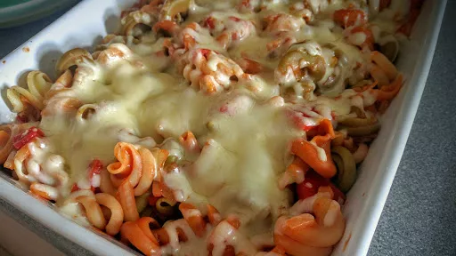

Meatball pasta bake
30 mins
Serves 4
Gluten Free

Gluten-free: use gluten-free bread, pasta and stock cube.
Ingredients
Meatballs
- 500 g minced beef
- 1 egg
- 1 tsp dried oragano
- 2 slices bread, made into breadcrumbs
- salt and pepper
- 1 tbsp olive oil
Sauce
- 1 onion, chopped
- 2 ready-roasted red peppers (from a jar), roughly chopped
- 500 g passata
- ½ mug water + 1 beef stock cube
- 200 g mozzarella cheese
- 1 tbsp fresh thyme leaves, chopped
Instructions
- Put the
pasta3 mugs
on to cook. Drain and return to the pan until needed.
- Meanwhile, make the meatballs. Mix together the
egg1
, oregano1 tsp
, mince500 g
and ½ the breadcrumbs in a bowl. Season well with salt and pepper. Divide into 24 pieces and form the meatballs.
- Heat the
oil1 tbsp
in a large frying pan and fry the meatballs until the are cooked through and brown on all sides. Place in the casserole dish.
- To make the sauce, add the onions to the pan and fry until they begin to soften.
- Add the
peppers2
, passata500 g
, water½ mug
and stock cube and simmer for 2 minutes.
- Mix the drained
pasta3 mugs
and pour into the casserole dish with the meatballs.
- Sprinkle the
mozzarella200 g
over the top, along with the thyme1 tbsp
. Sprinkle over the rest of the breadcrumbs. Place under the grill for 5 minutes. The cheese should be bubbling and the breadcrumbs browned.
Nosh: Quick & Easy
Short Link
Long Link